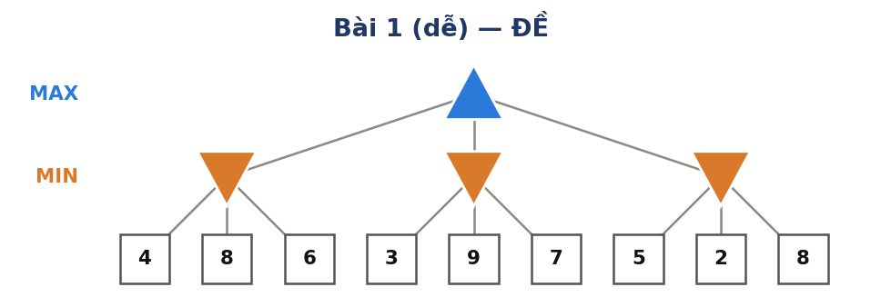
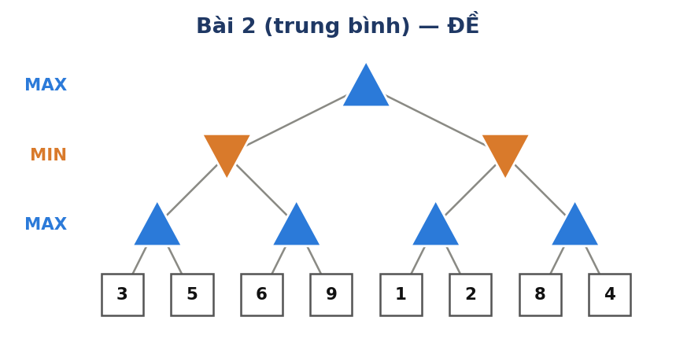
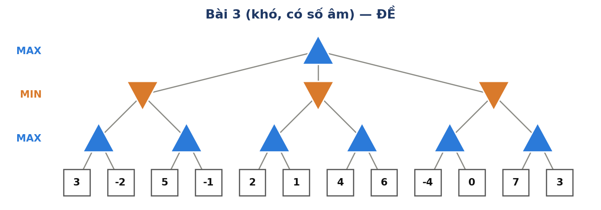
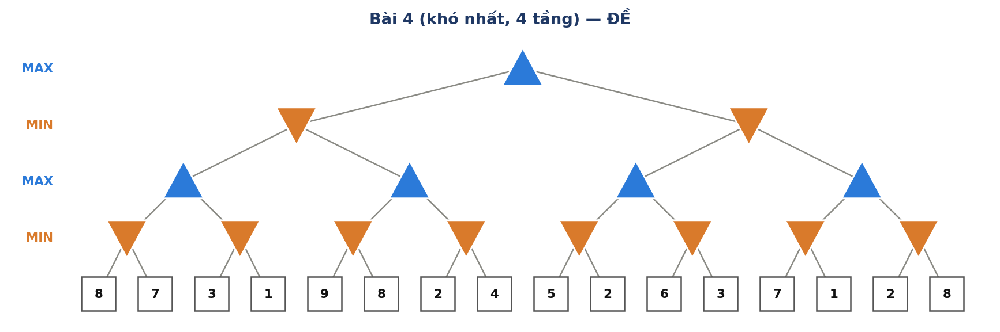
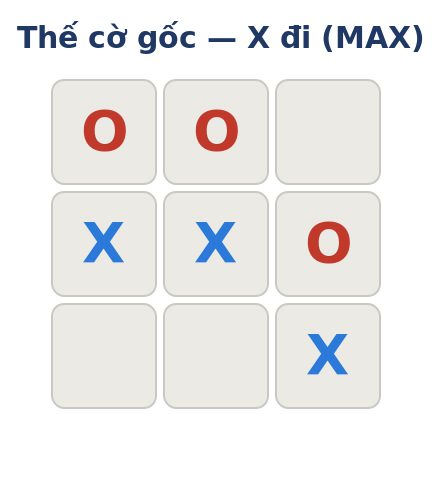

Conventions
- ▲ (MAX) nodes pick the maximum child value; ▼ (MIN) nodes pick the minimum. Leaf values are utility scores for MAX.
- Alpha-Beta traverses left to right, carrying two thresholds: α (best MAX is guaranteed) and β (best MIN is guaranteed).
- Prune when α ≥ β: at a MIN node, prune when current value v ≤ α; at a MAX node, prune when v ≥ β.
- Alpha-Beta always returns the same root value as Minimax — it just examines fewer leaves.
Part A — Four Minimax & Alpha-Beta Trees
For each game tree below, perform both tasks:
Exercise 1
2-Level Tree (Easy)

Tasks
- Apply Minimax to find the root value and the best move for MAX.
- Apply Alpha-Beta pruning (left → right): identify which leaves are pruned.
Questions
Q1.What is the root (Minimax) value? Which branch does MAX choose?
Q2.How many leaves does Alpha-Beta prune? List them.
Q3.How many leaves does Alpha-Beta examine out of the total?
Exercise 2
3-Level Binary Tree (Medium)

Tasks
- Apply Minimax to find the root value and the best move for MAX.
- Apply Alpha-Beta pruning (left → right): identify which leaves are pruned.
Questions
Q1.What is the root value? Which branch does MAX choose?
Q2.How many leaves does Alpha-Beta prune? List them.
Q3.How many leaves does Alpha-Beta examine out of the total?
Exercise 3
3-Level Ternary Tree with Negative Values (Hard)

Note: This tree contains negative leaf values. Remember that negative utilities are perfectly valid — they simply mean the position is unfavourable for MAX.
Tasks
- Apply Minimax to find the root value and the best move for MAX.
- Apply Alpha-Beta pruning (left → right): identify which leaves are pruned.
Questions
Q1.What is the root value? Which branch does MAX choose?
Q2.How many leaves does Alpha-Beta prune? List them.
Q3.How many leaves does Alpha-Beta examine out of the total?
Exercise 4
4-Level Tree with 16 Leaves (Hardest)

Tasks
- Apply Minimax bottom-up to find the root value and the best move for MAX.
- Apply Alpha-Beta pruning (left → right): identify which leaves are pruned. Show α and β values at each step.
Questions
Q1.What is the root value? Which branch does MAX choose?
Q2.How many leaves does Alpha-Beta prune? List them.
Q3.How many leaves does Alpha-Beta examine out of the total?
Q4.If the branches were reordered (right to left), would the root value change? Would the number of pruned leaves change? Explain briefly.
Part B — Heuristic Alpha-Beta (Tic-Tac-Toe)
Exercise 5
Heuristic Evaluation with Depth-Limited Search
Consider the following tic-tac-toe position. X is MAX and it is X's turn.

Since the full game tree is too large, we limit the search depth to 2 (X plays, then O responds) and use the following evaluation function:
EVAL(s) = (open lines for X) − (open lines for O)
Definition
An "open line for X" is any row, column, or diagonal that does not contain an O piece (so X can still potentially win along it). Similarly for O.
If a leaf state is terminal (someone wins), use the true utility instead: X wins = +∞, O wins = −∞.
Tasks
- Identify all empty squares where X can move. List X's possible moves.
- For each of X's moves, determine O's possible responses (the remaining empty squares).
- Expand the game tree to depth 2 — draw or list all 6 leaf states.
- Compute EVAL (or UTILITY if terminal) for each leaf state.
- Apply Alpha-Beta pruning to determine the best move for X.
Questions
Q1.What is the Minimax value at the root? What is X's best move?
Q2.How many leaf states does Alpha-Beta examine vs. total leaves?
Q3.Why is X's best move strategically critical? What happens if X plays elsewhere?
Hint: Pay close attention to whether O has an immediate winning threat in the current position. One of X's moves is clearly forced.